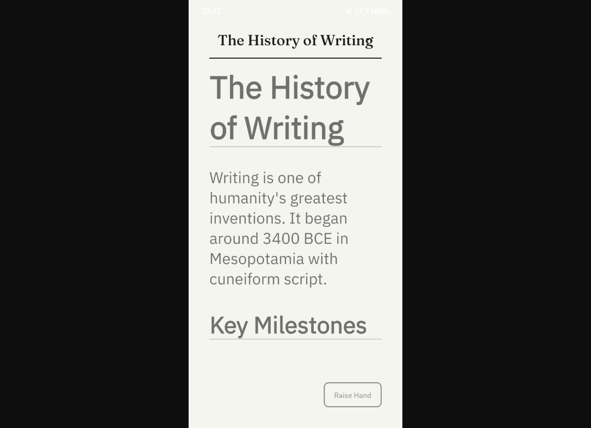
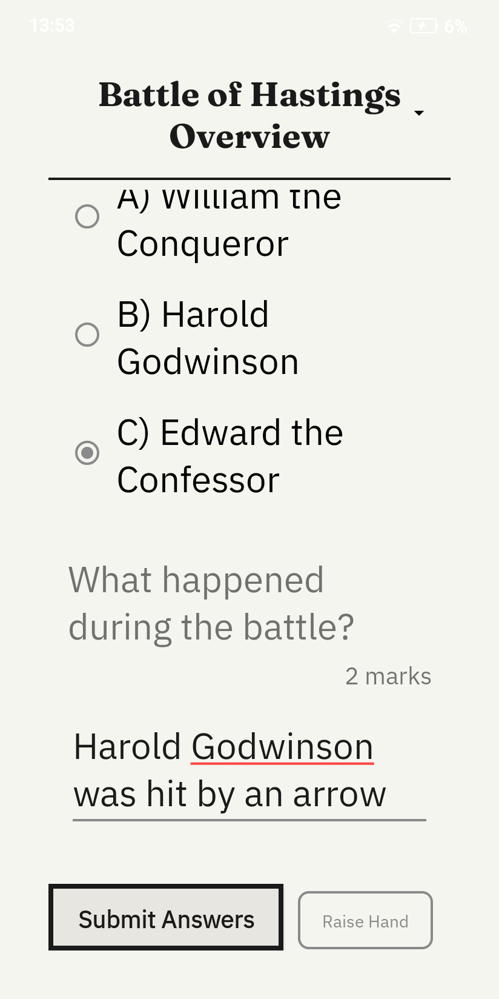

Implementation
Technical implementation details for the Windows teacher application and Android student application, including architecture, networking, AI integration, and CI/CD pipelines.
Manuscripta is implemented as two independent but tightly integrated applications built concurrently against a shared API contract. The Windows teacher application was built by Raphael Li and Nemo Shu. The Android student application was built by Priya Bargota and Will Stephen.
Key Features
| Feature | Status | Built by |
|---|---|---|
| AI material generation (Qwen3:8b + Granite fallback) | ✓ | Raphael Li |
| Hierarchical content library | ✓ | Nemo Shu |
| Real-time classroom dashboard | ✓ | Nemo Shu |
| Device pairing and management | ✓ | Nemo Shu |
| AI feedback generation with teacher approval | ✓ | Raphael Li |
| Android device pairing screen | ✓ | Priya Bargota, Will Stephen |
| Worksheet and quiz display | ✓ | Priya Bargota, Will Stephen |
| Raise Hand help request | ✓ | Priya Bargota, Will Stephen |
| Multi-channel networking (HTTP/TCP/UDP) | ✓ | Priya Bargota, Will Stephen |
| Clean Architecture data and network layers | ✓ | Priya Bargota, Will Stephen |
| Content transformation (simplify, expand, summarise) | ⚠ | Priya Bargota, Will Stephen |
| Text-to-speech | ⚠ | Priya Bargota, Will Stephen |
| Kiosk mode | ⚠ | Priya Bargota, Will Stephen |
Frameworks and Libraries
Windows Teacher Application
| Component | Technology | Purpose |
|---|---|---|
| Backend framework | ASP.NET Core (.NET 10.0) | REST API, SignalR hub, business logic |
| Frontend framework | React + Electron | Desktop UI, backend process management |
| Real-time communication | SignalR | Bidirectional event broadcasting between backend and UI |
| Database | SQLite via Entity Framework Core | Local persistent storage for all content and session data |
| AI inference | Ollama (Qwen3:8b, IBM Granite 4.0) | On-device material generation and feedback |
| Vector database | ChromaDB | RAG pipeline for source document retrieval |
| Device delivery | rmapi, SMTP | reMarkable and Kindle content distribution |
| Build and packaging | Electron Forge, Squirrel | Windows installer creation |
Android Student Application
| Component | Technology | Purpose |
|---|---|---|
| Language | Java | Primary development language |
| Local database | Room (androidx.room 2.6.1) | Offline-first persistent storage |
| HTTP networking | Retrofit 2.11.0 + OkHttp 4.12.0 | REST communication with Windows backend |
| Dependency injection | Hilt (Dagger 2.52) | Loose coupling across all layers |
| Architecture | MVVM with LiveData | Reactive UI without direct data source access |
| Testing | JUnit, Mockito, Robolectric, MockWebServer | Unit and integration testing |
| Coverage reporting | JaCoCo 0.8.12 | 95% coverage enforcement via CI |
| Code style | Checkstyle 10.12.0 | Enforced on every pull request |
Repository Structure
The project uses a monorepo — both applications live in the same GitHub repository at raphaellith/Manuscripta under separate top-level directories. This allowed both sub-teams to share the API contract and documentation while keeping their CI/CD pipelines independent via path-based triggers.
Manuscripta/
├── android/ Android student application
│ └── app/
│ └── src/main/java/ Java source code
├── windows/ Windows teacher application
│ └── ManuscriptaTeacherApp/
│ ├── Main/ ASP.NET Core backend
│ └── UI/ Electron + React frontend
├── docs/ Project documentation
├── api-spec/ Shared API contract
└── README.mdAPI Contract
Because the Windows and Android applications were developed simultaneously by separate sub-teams, a shared API contract was established at the outset and stored in api-spec/ in the monorepo. This contract defined the HTTP endpoints, request and response formats, and TCP message opcodes that both sides agreed to implement independently. Neither team needed to wait for the other before building — the contract served as the integration boundary.
HTTP Endpoints (port 5911)
| Method | Endpoint | Purpose |
|---|---|---|
| POST | /pair | Device registration and pairing |
| GET | /distribution/{deviceId} | Fetch assigned materials for a device |
| POST | /responses | Submit a student answer |
| GET | /config/{deviceId} | Fetch accessibility configuration |
| GET | /feedback/{deviceId} | Retrieve AI-generated feedback |
TCP Message Opcodes (port 5912)
| Opcode | Name | Direction | Purpose |
|---|---|---|---|
| 0x10 | STATUS_UPDATE | Client to Server | Heartbeat every 3 seconds |
| 0x05 | DISTRIBUTE_MATERIAL | Server to Client | Trigger material fetch |
| 0x12 | DISTRIBUTE_ACK | Client to Server | Confirm receipt per material |
| 0x11 | HAND_RAISED | Client to Server | Help request signal |
| 0x01 | LOCK_SCREEN | Server to Client | Remote screen lock |
| 0x02 | UNLOCK_SCREEN | Server to Client | Remote screen unlock |
All device and entity IDs are validated as GUIDs server-side. Invalid IDs return 404 Not Found with a generic message rather than 400 Bad Request, avoiding information leakage to unauthenticated callers.
Windows Teacher Application
Built by Raphael Li and Nemo Shu
Application Startup and Process Management
The Windows application consists of a .NET 10.0 ASP.NET Core backend and a React and Electron frontend. The frontend is solely responsible for spawning, monitoring and terminating the backend as a child process on startup using Node.js child_process.spawn. The backend is published as a self-contained win-x64 executable bundled inside the Electron application, meaning the teacher installs and runs a single application with no separate setup required. If the backend crashes, the frontend detects this via health checks and restarts it automatically with exponential backoff. Dynamic port allocation ensures startup succeeds even if default ports are unavailable.
Security is enforced through strict Content Security Policy headers, a preload script using contextBridge, and no Node.js access in the renderer process. File attachments are stored using UUID-based naming in AppData\ManuscriptaTeacherApp\Attachments, with IPC handlers managing file picking, storage, retrieval and deletion.
Content Library
The Library view provides a hierarchical explorer of all teaching content organised as Unit Collections, Units, Lessons and Materials. Teachers can expand and collapse each level, search across all materials using a global search bar, and create new content at any level. Material type is indicated by icon — worksheets and quizzes are visually distinguished. This hierarchy was added directly in response to client feedback captured in C7.

Classroom Management
The Classroom view is divided into two panels. The Deploy Material panel allows the teacher to select a unit, lesson, material and accessibility options from cascading dropdowns, then deploy to all selected devices simultaneously. The Device Controls panel provides one-click Lock All and Unlock All buttons, and separate pairing flows for Android tablets via TCP and external devices such as Kindle via email.
The connected device grid shows each paired device as a card displaying its name and connection status — ON TASK, NEEDS HELP or DISCONNECTED. The Kindle device is shown with a distinct label, reflecting the parallel delivery workflow validated with Dr Atia Rafiq.

Responses and AI Feedback
The Responses view shows each question from the deployed material alongside all student responses received. For each response the teacher sees the student's answer, the AI-generated mark scheme, a mark input field, and an AI-generated feedback comment produced by IBM Granite 4.0. The teacher can edit the mark, edit the feedback text, send it directly to the student's device, or regenerate the feedback using the Re-generate with AI button. This implements the teacher oversight requirement — AI feedback is always subject to teacher review before it reaches the student.

Real-Time Communication via SignalR
The backend exposes a SignalR hub at /TeacherPortalHub on port 5910, providing real-time bidirectional communication between the backend and the React frontend. The frontend subscribes to hub events and updates the UI reactively without polling.
A dedicated HubEventBridge hosted service bridges low-level TCP network events to high-level SignalR broadcasts. It subscribes to eight event types and converts them to Clients.All.SendAsync() broadcasts, implementing a clean pub/sub pattern that keeps the TCP layer decoupled from the UI layer. Key events include UpdateDeviceStatus, HandRaised, DistributionFailed, RefreshResponses and feedback state transitions from PROVISIONAL to READY to DELIVERED.
AI Content Generation Pipeline
Material generation uses a two-model pipeline running entirely on the teacher's laptop via Ollama. Qwen3:8b is the primary model for generating formatted worksheets and quizzes. IBM Granite 4.0 was originally intended as the primary model but was moved to fallback after testing showed it struggled to produce correctly structured output, particularly for question-based materials. Granite is retained for lower-resource hardware and is used as the primary model for feedback generation, where its performance is sufficient for the smaller task.
For source document processing, ChromaDB implements a standard RAG pipeline. Documents are chunked into 512-token segments with 64-token overlap, embedded using the nomic-embed-text model via Ollama, and stored in ChromaDB with metadata. During material generation, the top five most semantically relevant chunks are retrieved and injected into the prompt, solving the context window limitation that makes large documents such as textbooks unusable when passed whole to the model.
Runtime dependencies including Ollama, ChromaDB and rmapi are managed by a centralised RuntimeDependencyManager system built on an abstract base class. Each dependency subclasses from this base, meaning new tools can be added without duplicating detection and installation logic.
Pseudocode: Material Generation
FUNCTION GenerateMaterial(description, readingAge, materialType, unitCollectionId, sourceDocIds):
// Model selection
selectedModel = "qwen3:8b"
IF NOT CanGenerateWithModel(selectedModel):
UnloadModel("qwen3:8b")
selectedModel = "granite4"
IF NOT EnsureModelReady(selectedModel):
THROW "No models available"
// RAG context retrieval
descriptionEmbedding = Ollama.Embed("nomic-embed-text", description)
relevantChunks = ChromaDB.Query(
vector = descriptionEmbedding,
filters = {UnitCollectionId, SourceDocumentIds},
topK = 5
)
// Prompt construction
prompt = BuildPrompt(description, readingAge, materialType, relevantChunks)
// LLM inference
response = Ollama.Chat(selectedModel, prompt, temperature=0.7, timeout=300s)
generatedContent = response.content
// Validation and iterative refinement (fallback model only, max 3 iterations)
IF selectedModel == "granite4":
FOR iteration IN 1..3:
errors = ValidateOutput(generatedContent)
IF no errors: BREAK
generatedContent = Ollama.Chat(selectedModel, RefinementPrompt(errors))
// Deterministic fixes
finalContent = ApplyFixes(generatedContent) // close code blocks, normalise headers, fix markers
// Question extraction for worksheets
IF materialType == WORKSHEET:
finalContent, questionIds = ExtractQuestionsFromDrafts(finalContent)
RETURN finalContent, questionIds
END FUNCTIONPseudocode: Feedback Generation
FUNCTION GenerateFeedbackAsync(response):
question = FetchQuestion(response.questionId)
IF question.markScheme == null: RETURN null
EnsureModelReady("granite4")
prompt = BuildFeedbackPrompt(question.text, response.answerText, question.markScheme)
feedbackText = Ollama.Chat("granite4", prompt, temperature=0.5)
feedback = CreateFeedback(feedbackText, status=PROVISIONAL)
SignalR.Broadcast("OnFeedbackGenerated", feedbackId, responseId)
RETURN feedbackId
END FUNCTIONTCP Networking and Device Management
The TcpPairingService manages a dual-socket setup: a TCP listener for incoming connections and a concurrent dictionary mapping device IDs to active TcpClient instances. The heartbeat timeout window is 10 seconds — if no STATUS_UPDATE is received from a device within this window, it is marked DISCONNECTED and the teacher dashboard updates in real time via SignalR.
Command queueing uses TaskCompletionSource for async waiting on LOCK and UNLOCK acknowledgements, allowing the Windows application to await confirmation that a command was received before updating the UI.
Android Student Application
Built by Priya Bargota and Will Stephen
The Android application is written in Java and follows Clean Architecture with three strictly separated layers. Dependency injection is handled by Hilt throughout. The backend data and network layers achieve 96% instruction coverage and 93% branch coverage across 88 classes, validated by JaCoCo.
Device Pairing Screen
On first launch the student enters their name and taps Pair. The application broadcasts a UDP discovery packet on port 5913 to locate the teacher's Windows application on the local network without requiring manual IP configuration. Once the server responds, a TCP pairing handshake is completed on port 5912 and the device is registered. The screen is deliberately minimal — a single text field and one button — reflecting the principle of reducing cognitive load established in C1.

Worksheet View
Once paired and a material is deployed, the student sees the worksheet displayed in large high-contrast monochromatic text optimised for E-ink rendering. Typography is set at a size appropriate for the target age group with generous line spacing to support students with reading difficulties. A persistent Raise Hand button sits at the bottom right of every content screen, allowing the student to send a discreet help request to the teacher dashboard without interrupting their work.

⚠ Content transformation buttons (simplify, expand, summarise) are identified as a should-have requirement and are partially implemented. Full delivery is noted in the evaluation section.
Quiz View
The quiz view displays a reading passage followed by a question and an answer input field. The student types their response and submits it via HTTP POST to port 5911, where it appears in the teacher's Responses view alongside AI-generated feedback from IBM Granite 4.0.

⚠ Text-to-speech functionality is integrated into the application architecture but not fully delivered within the project timeline.
Clean Architecture Implementation
The data layer contains Room entities, DAOs and Retrofit DTOs. Entities are immutable with a single constructor, making them suitable only for Room persistence and preventing accidental mutation. The domain layer contains corresponding domain models with convenience constructors and input validation that throws immediately on invalid state. Bidirectional mappers convert between entities and domain models, keeping Room annotations entirely out of business logic. The presentation layer uses ViewModels and LiveData, ensuring the UI reacts to state changes without directly accessing data sources.
Multi-Channel Networking
Pseudocode: Connection and Heartbeat
ON app start:
UDP.Broadcast(DISCOVERY_PACKET, port=5913)
WAIT for server response
ON server found:
TCP.Connect(serverIP, port=5912)
TCP.Send(PAIRING_REQUEST, deviceId, studentName)
WAIT for PAIRING_ACK
ON material deployed (TCP signal 0x05 received):
HTTP.GET("/distribution/{deviceId}", port=5911)
FOR each material downloaded:
TCP.Send(DISTRIBUTE_ACK, deviceId + 0x00 + materialId)
UI.DisplayMaterial()
EVERY 3 seconds:
TCP.Send(STATUS_UPDATE 0x10, deviceId, status, batteryLevel, currentMaterialId)
ON Raise Hand tapped:
TCP.Send(HAND_RAISED 0x11, deviceId)
UI.ShowConfirmation()
ON answer submitted:
HTTP.POST("/responses", deviceId, questionId, answerText)
LocalDB.Save(response, synced=true)Pseudocode: Retry with Exponential Backoff
FUNCTION SyncResponse(response):
attempts = 0
backoff = 1 second
WHILE attempts < 5:
TRY:
result = HTTP.POST("/responses", response)
IF result == 201:
MarkSynced(response)
RETURN success
CATCH NetworkException:
WAIT(backoff)
backoff = MIN(backoff * 2, 32 seconds)
attempts++
LocalDB.Save(response, synced=false) // queue for later sync
END FUNCTIONCI/CD Pipeline
The Android application uses GitHub Actions for continuous integration. The workflow triggers on pull requests to any path within android/ and runs two jobs sequentially. The first job runs Checkstyle to enforce code style across the entire codebase. The second job runs the full JaCoCo test suite and enforces 100% unit test coverage — the build fails if coverage drops below this threshold. Coverage reports are uploaded as artifacts and posted as comments on pull requests automatically.
⚠ A Windows CI/CD pipeline was not implemented within the project timeline. The Windows application is built and packaged manually using Electron Forge.
Key Implementation Decisions
| Decision | Rationale |
|---|---|
| Electron manages .NET backend lifecycle | Single executable deployment — teachers install one application, backend starts automatically with no separate setup |
| Qwen3:8b as primary, Granite as fallback | Granite struggled with correctly formatted multi-question materials during testing; Qwen3 produces better structured output at reasonable speed |
| Per-material TCP acknowledgement | Allows the Windows dashboard to display exact distribution state per material rather than a single batch confirmation |
| HeartbeatManager owns all TCP dispatch | Prevents direct coupling between the network layer and repositories, single source of truth for all TCP messages |
| Immutable Room entities | Prevents accidental mutations during persistence, enforces clean separation from domain models |
| 404 for invalid GUIDs | Avoids leaking information about ID validity to unauthenticated callers, aligns with RESTful practice |
| 100% Android unit test coverage enforced by CI | Ensures every data and network layer component is independently verifiable, supporting the clean architecture goal |
Video Demo
TODO: Record and add 8-minute demonstration video showcasing both applications
Video Requirements (8 minutes):
- 1 min — Project intro: what Manuscripta is, who it is for, why E-ink and on-device AI
- 2 min — Windows app: Library hierarchy, AI material generation (show actual generation), deploy to device
- 1 min — Classroom view: device grid, Lock All, pairing flow, Kindle device
- 1 min — Responses view: student answer, AI feedback from Granite, teacher editing and sending
- 2 min — Android app: pairing screen, worksheet on E-ink device, quiz with Raise Hand button
- 1 min — Architecture and closing: system end-to-end, 96% test coverage, local network only
Recording Guidelines:
- Use 1080p resolution or higher
- Clear narration, no background music
- Show AI generation working live (cut/speed up if needed)
- Record Android on actual E-ink tablet, not emulator
- Label each section clearly while narrating
- Record in quiet environment
- Keep under 10 minutes total
GitHub Repository
View the complete source code on GitHub: Manuscripta Repository